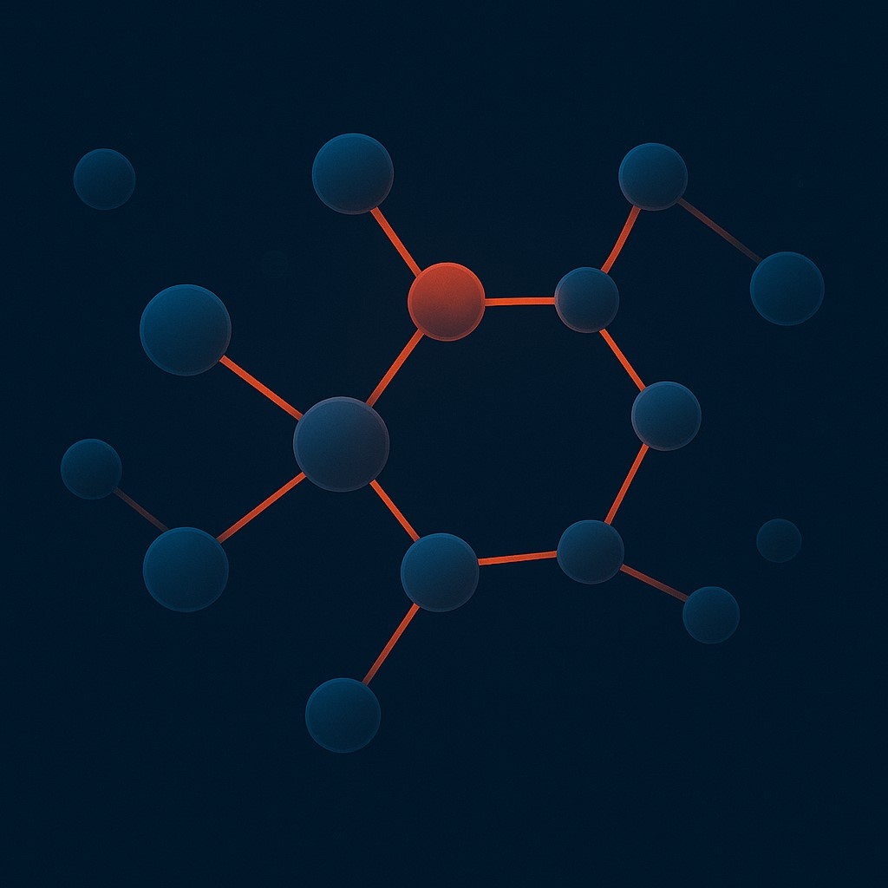
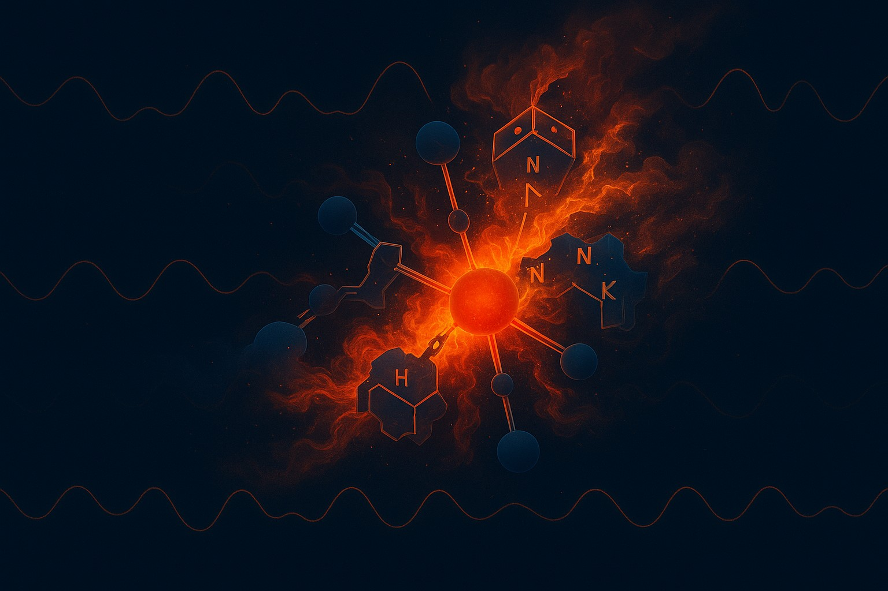

Machine learning grounded in physics
Agents in flow, structure from spectra, forecasting when sensors are thin. Models and pipelines built to hold up in the real world.
Hello
I’m Josef Berman—data scientist and researcher at the overlap of RL, computational physics, and scientific ML: learning in dynamic physical environments, structure and signals from scientific data, and forecasting when real-world measurements are sparse. I optimize for systems that respect physics and instrumentation, not just offline metrics.
Selected work
FluxSwarm
Train micro-agent collectives in time-varying velocity fields—channels, vasculature, and other flows where drag and coordination matter.


EnergeticGraph
Retrieval-augmented Q&A with property predictors and graph reasoning over energetic compounds—SMILES, docs, and learned signals together.
Let’s talk
Open to research collaborations and applied ML at the physics–chemistry–ML boundary.
Send Email